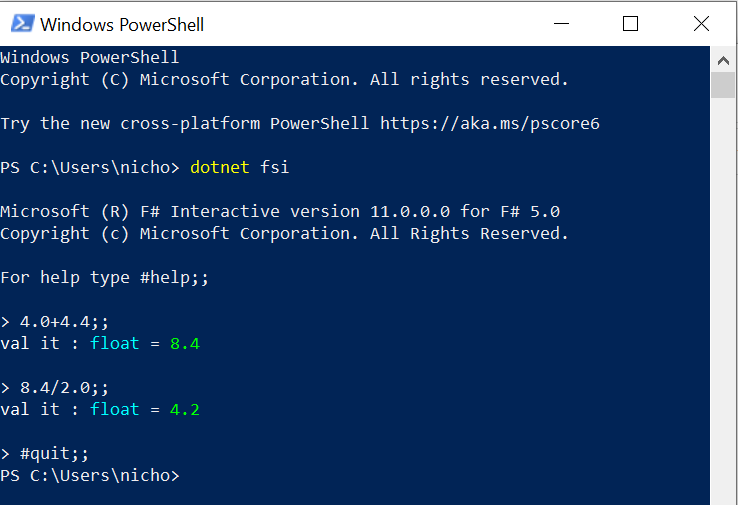

Fundamentals
A good place to start is to define a one-period return calculation.
Objectives:
- Interactive programming
- How to calculate returns.
- Working with data.
- How to calculate return volatility
Interactive programming
We are going to focus on interactive programming. This is the most productive (and most common) type of analytic programming. In constrast to compiled programs (e.g, C, C++, Fortran, Java), interactive programs:
- Allow rapid iterative development.
- You can quickly quickly write and rewrite sections of code, evaluating the output, without having to rerun the entire program.
- This is especially useful for financial analysis, because we often evaluate large datasets that take a long time to process.
Interactive programming typically involves a REPL (Read, Evaluate, Print, Loop). It is common for scripting langauges such as R, Python, Julia, Ruby, and Perl.
The terminal
The most basic way that you can run interactive code is at the command line using an interpreter. We can star the F# interactive interpreter by opening a terminal (e.g., terminal.app, cmd, powershell) and running dotnet fsi.
Once fsi is open, we can type a code snippet in the prompt followed by ";;" to terminate it and it will run.

It is fine to run code this way, but we can do better using an IDE (Integrated development environment) that incorportes syntax highlighting, intellisense tooltips, and execution.
Calculating returns
Basic calculations in fsi
Let's assume that you have $120.00 today and that you had $100.00 a year ago. Your annual return is then:
(120.0 / 100.0) - 1.0
|
Basic numerical types: float, int, and decimal
Notice that I included zeros after the decimal point. This is important. The decimal point makes it a floating point number. Floating point numbers (floats) are the most commonly used numerical type for mathematical calculations.
If we left the decimal off it would be an integer and we would get the wrong answer because integers cannot represent fractions.
(120/100) - 1
|
The other numerical data type is decimal.
(120m/100m) - 1m
|
Decimals are used when you need an exact fractional amount. Floats are insufficient in these circumstances because "... such representations typically restrict the denominator to a power of two ... 0.3 (3/10) might be represented as 5404319552844595/18014398509481984 (0.299999999999999988897769...)" (see wiki).
Static type checking
Finally, since F# is staticly typed, we must do arithmetic using numbers that are all the same type. If we mix floats and integers we will get an error:
(120.0 / 100) - 1.0
|
Static tying can slow you down a bit writing simple small programs, but as programs get larger and more complex the benefits become apparent. Specifically, static typing as implemented by F#:
- helps you ensure that the code is correct (i.e., the type of the input data matches what the function expects). In the words of Yaron Minksy at Janestreet, you can "make illegal states unrepresentable" (see here for F# examples).
- it also facilitates editor tooling that can check your code without running it and give tooltip errors (you should have seen a tooltip error in your editor if you type
(120.0 / 100) - 1.0in your program file). It's like clippy on steriods (you are too young, but your parents might get this reference).

Assigning values
We could also do the same calculations by assigning $120.00 and $100.0 to named values.
let yearAgo = 100.0
let today = 120.0
(today / yearAgo) - 1.0
|
This works for one-off calculations, but if we want to do this more than once, then it makes more sense to define a function to do this calculation.
Defining functions
Functions map (or transform) inputs into outputs.
// Here is a simple function.
// It takes an input as an input x and then it adds
// 1 to whatever x is.
let f(x) = x + 1
f(1) // here x is 1
f(2) // here x is 2
f(3) // here x is 3
// We can also chain them
f(f(f(1))) // = (1 + (1 + (1 + 1)))
// The parentheses are optional, and it's more standard leave them off.
let f2 x = x + 1
// We can easily define a function to calcuate this return.
let calcReturn pv fv = (fv / pv) - 1.0
The type signature tells us that calcReturn is a function with two float inputs (pv and fv) and it maps those two inputs into a float output. The program was able to infer that pv and fv are floats because of the 1.0 float in the calculation.
Se can execute it on simple floats:
// here pv = 100., fv = 110.0
calcReturn 100.0 110.0
|
// here pv = 80.0, fv = 60.0
calcReturn 80.0 60.0
|
Or we can execute it on our previously defined yearAgo and today values:
calcReturn yearAgo today
|
However, if we try to get it to execute on decimals, we will get an error because we defined the function to only operate on floats. This is another (simple) example of the compiler using type checking.
calcReturn 100.0m 120.0m
|
Handling dividends
Our prior return calculation did not handle cash distributions such as dividends. We can incorporate dividends with a small modificaton:
let simpleReturn beginningPrice endingPrice dividend =
// This is solving for `r` in FV = PV*(1+r)^t where t=1.
(endingPrice + dividend) / beginningPrice - 1.0
The examples thus far have used simple (per period) compounding. We can also calculate continuously compounded returns, sldo known as log returns.
let logReturn beginningPrice endingPrice dividend =
// This is solving for `r` in FV = PV*e^(rt) where t=1.
log(endingPrice + dividend) - log(beginningPrice)
These two calculations give slightly different returns.
simpleReturn 100.0 110.0 0.0
|
logReturn 100.0 110.0 0.0
|
It is typically not important which version of return you use so long as you are consistent and keep track of what type of return it is when you're compounding things.
Practice: Can you write a function to compound an initial investment of $100.00 at 6% for 5 years? You can calculate power and exponents using:
2.0**3.0
|
log 2.0
|
exp 0.6931
|
exp(log(2.0))
|
Tuples
Looking at our return functions, we're starting to get several values that we're passing into the functions individaully. It can be useful to group these values together to make it easy to pass them around. Tuples are a simple way to group values.
(1,2)
|
(1,2,3)
|
Tubles can contain mixed types.
(1,"2")
|
We can also deconstruct tuples. We can use built-in convenience functions for pairs.
fst (1,2)
|
snd (1,2)
|
We can also deconstruct tuples using pattern matching.
let (a, b) = (1, 2)
|
let (c, d, e) = (1, "2", 3.0)
|
Now redefining our simple return function to take a single tuple as the input parameter.
let simpleReturnTuple (beginningPrice, endingPrice, dividend) =
// This is solving for `r` in FV = PV*(1+r)^t where t=1.
(endingPrice + dividend) / beginningPrice - 1.0
simpleReturnTuple (100.0, 110.0, 0.0)
|
let xx = (100.0, 110.0, 0.0)
simpleReturnTuple xx
|
Records
If we want more structure than a tuple, then we can define a record.
type RecordExample =
{ BeginningPrice : float
EndingPrice : float
Dividend : float }
And construct a value with that record type.
let x = { BeginningPrice = 100.0; EndingPrice = 110.0; Dividend = 0.0}
|
Similar to tuples, we can deconstruct our record value x using pattern matching.
let { BeginningPrice = aa; EndingPrice = bb; Dividend = cc} = x
|
We can also access individual fields by name.
x.EndingPrice / x.BeginningPrice
|
We can define a return function that operates on the RecordExample type explicitly:
let simpleReturnRecord1 { BeginningPrice = beginningPrice; EndingPrice = endingPrice; Dividend = dividend} =
// This is solving for `r` in FV = PV*(1+r)^t where t=1.
(endingPrice + dividend) / beginningPrice - 1.0
Or we can let the compiler's type inference figure out the input type.
let simpleReturnRecord2 x =
// This is solving for `r` in FV = PV*(1+r)^t where t=1.
(x.EndingPrice + x.Dividend) / x.BeginningPrice - 1.0
Or we can provide a type hint to tell the compiler the type of the input.
let simpleReturnRecord3 (x : RecordExample) =
// This is solving for `r` in FV = PV*(1+r)^t where t=1.
(x.EndingPrice + x.Dividend) / x.BeginningPrice - 1.0
All 3 can be used interchangably, but when you have many similar types a type hint may be necessary to make the particular type that you want explicit.
simpleReturnRecord1 x
|
simpleReturnRecord2 x
|
simpleReturnRecord3 x
|
Pipelines and lambda expressions
This download code used pipelining and lambda functions, which are two important language features. Pipelines are created using the pipe operator (|>) and allow you to pipe the output of one function to the input of another. Lambda expressions allow you to create functions on the fly.
1.0 |> fun x -> x + 1.0 |> fun x -> x ** 2.0
|
Collections: Arrays, Lists, Sequences
A simple int array.
let ar = [| 0 .. 10 |]
ar |> Array.take 5
|
When we look at the type signature of the elements in the array val ar : int [], it tells us that we have a integer array, meaning an array in which each element of the array is an integer. Arrays are "zero indexed", meaning the 0th item is the first in the array. We can access the elements individually or use a range to access multiple together.
ar.[0]
|
ar.[0 .. 2]
|
A simple float array.
let arr = [| 1.0 .. 10.0 |]
arr.[0]
arr.[0 .. 5]
|
Lists and sequences are similar.
// List
[ 1.0 .. 10.0 ]
// Sequence
seq { 1.0 .. 10.0 }
Arrays, lists, and sequences have different properties that can make one data structure preferable to the others in a given setting. We'll discuss these different properties in due time, but for an overview you can see the F# collection language reference here. Sequences are the most different as they are "lazy", meaning "Sequences are particularly useful when you have a large, ordered collection of data but don't necessarily expect to use all the elements. Individual sequence elements are computed only as required, so a sequence can perform better than a list if not all the elements are used" (see F# language reference).
These collections have several built-in functions for operating on them such as map, filter, groupBy, etc.
arr
|> Array.map(fun x -> x + 1.0)
|
arr
|> Array.filter(fun x -> x < 5.0)
|
arr
|> Array.groupBy(fun x -> x < 5.0)
|> Array.map(fun (group, xs) -> Array.min xs, Array.max xs)
|
Working with data
With this foundation, let's now try loading some data. We are going to obtain and process the data using an external F# library called FSharp.Data that makes the processing easier.
Namespaces
First, let's create a file directory to hold data. We are going to use built-in dotnet IO (input-output) libraries to do so.
// Set working directory to the this code file's directory
System.IO.Directory.SetCurrentDirectory(__SOURCE_DIRECTORY__)
// Now create cache directory one level above the working directory
System.IO.File.WriteAllLines("test.txt",["first";"second"])
This illustrates the library namespace hierarchy. If we want to access the function within the hierarchy without typing the full namespace repetitively, we can open it. The following code is equivalent.
open System.IO
Directory.SetCurrentDirectory(__SOURCE_DIRECTORY__)
File.WriteAllLines("test.txt",["first";"second"])
It is common to open the System namespace
open System
API keys
We are going to request the data from the provider tiingo. Make sure that you are signed up and have your API token. An API (application programming interface) allows you to write code to communicate with another program. In this case we are goig to write code that requests stock price data from tiingo's web servers.
Once you have your api key, create a file called secrets.fsx and save it at the root/top level of your project folder. In secrets.fsx, assign your key to a value named tiingoKey. If you are using git, make sure to add secrets.fsx to your .gitignore file.
let tiingoKey = "yourSuperSecretApiKey"
We can load this in our interactive session as follows, assuming that secrets.fsx is located one folder above the current one in the file system.
#load "secrets.fsx"
and we can access the value by typing
Secrets.tiingoKey
FSharp.Data Csv Type Provider
We're now going to process our downloaded data using the FSharp.Data Csv Type Provider. This is code that automatically defines the types of input data based on a sample. We have already reference the nuget packaged and opened the namespace, so we can just use it now.
#load "Common.fsx"
open Common
let aapl =
"AAPL"
|> Tiingo.request
|> Tiingo.get
aapl
|> Array.take 5
|
Plotting
Now let's plot the stock price using Plotly.NET.
#r "nuget: Plotly.NET, 2.0.0-beta5"
open Plotly.NET
let sampleChart =
aapl
|> Seq.map(fun x -> x.Date, x.AdjClose)
|> Chart.Line
sampleChart |> Chart.Show
|
Let's calculate returns for this data. Typically we calculate close-close returns. Looking at the data, we could use the close, divCash, and splitFacor columns to calculate returns accounting for stock splits and dividends (a good at home exercise). But there is also an adjClose column that accounts for both those things. So we we can use this
// Returns
let returns =
aapl
|> Seq.sortBy(fun x -> x.Date)
|> Seq.pairwise
|> Seq.map(fun (a,b) -> b.Date, calcReturn (float a.AdjClose) (float b.AdjClose))
let avgReturnEachMonth =
returns
|> Seq.groupBy(fun (date, ret) -> DateTime(date.Year, date.Month,1))
|> Seq.map(fun (month, xs) -> month, Seq.length xs, xs |> Seq.averageBy snd)
We can look at a few of these
avgReturnEachMonth |> Seq.take 3 |> Seq.toList
|
The default DateTime printing is too verbose if we don't care about time. We can simplify the printing:
fsi.AddPrinter<DateTime>(fun dt -> dt.ToString("s"))
avgReturnEachMonth |> Seq.take 3 |> Seq.toList
|
let monthlyReturnChart =
avgReturnEachMonth
|> Seq.map(fun (month, cnt, ret) -> month, ret)
|> Chart.Bar
monthlyReturnChart |> Chart.Show
|
Volatility
We represent volatility by the standard deviation of returns. We can define a standard deviation function ourself.
let stddev xs =
let mu = xs |> Seq.average
let sse = xs |> Seq.sumBy(fun x -> (x - mu)**2.0)
let n = xs |> Seq.length |> float
sqrt (sse / (n - 1.0))
[1.0 .. 10.0 ] |> stddev
|
But it is also convenient to use the FSharp.Stats
#r "nuget: FSharp.Stats, 0.4.0"
open FSharp.Stats
[1.0 .. 10.0 ] |> Seq.stDev
|
Now let's look at 5-day rolling volatilities.
let rollingVols =
returns
// Sort by date again because you never can be too careful
// about making sure that you have the right sort order.
|> Seq.sortBy fst
|> Seq.windowed 5
|> Seq.map(fun xs ->
let maxWindowDate = xs |> Seq.map fst |> Seq.max
let dailyVol = xs |> Seq.stDevBy snd
let annualizedVolInPct = dailyVol * sqrt(252.0) * 100.0
maxWindowDate, annualizedVolInPct)
let volChart =
rollingVols
|> Chart.Line
volChart |> Chart.Show
|
example fast binder url: https://mybinder.org/v2/gh/fsprojects/fsharp.formatting/master?urlpath=git-pull?repo=https:/nhirschey.github.com/teaching/gh-pages/fundamentals.ipynb
<summary>Natural logarithm of the given number</summary>
<param name="value">The input value.</param>
<returns>The natural logarithm of the input.</returns>
<summary>Exponential of the given number</summary>
<param name="value">The input value.</param>
<returns>The exponential of the input.</returns>
<summary>Return the first element of a tuple, <c>fst (a,b) = a</c>.</summary>
<param name="tuple">The input tuple.</param>
<returns>The first value.</returns>
<summary>Return the second element of a tuple, <c>snd (a,b) = b</c>.</summary>
<param name="tuple">The input tuple.</param>
<returns>The second value.</returns>
val float : value:'T -> float (requires member op_Explicit)
<summary>Converts the argument to 64-bit float. This is a direct conversion for all primitive numeric types. For strings, the input is converted using <c>Double.Parse()</c> with InvariantCulture settings. Otherwise the operation requires an appropriate static conversion method on the input type.</summary>
<param name="value">The input value.</param>
<returns>The converted float</returns>
--------------------
[<Struct>] type float = System.Double
<summary>An abbreviation for the CLI type <see cref="T:System.Double" />.</summary>
<category>Basic Types</category>
--------------------
type float<'Measure> = float
<summary>The type of double-precision floating point numbers, annotated with a unit of measure. The unit of measure is erased in compiled code and when values of this type are analyzed using reflection. The type is representationally equivalent to <see cref="T:System.Double" />.</summary>
<category index="6">Basic Types with Units of Measure</category>
<summary>Contains operations for working with arrays.</summary>
<remarks> See also <a href="https://docs.microsoft.com/dotnet/fsharp/language-reference/arrays">F# Language Guide - Arrays</a>. </remarks>
<summary>Returns the first N elements of the array.</summary>
<remarks>Throws <c>InvalidOperationException</c> if the count exceeds the number of elements in the array. <c>Array.truncate</c> returns as many items as the array contains instead of throwing an exception.</remarks>
<param name="count">The number of items to take.</param>
<param name="array">The input array.</param>
<returns>The result array.</returns>
<exception cref="T:System.ArgumentNullException">Thrown when the input array is null.</exception>
<exception cref="T:System.ArgumentException">Thrown when the input array is empty.</exception>
<exception cref="T:System.InvalidOperationException">Thrown when count exceeds the number of elements in the list.</exception>
val seq : sequence:seq<'T> -> seq<'T>
<summary>Builds a sequence using sequence expression syntax</summary>
<param name="sequence">The input sequence.</param>
<returns>The result sequence.</returns>
--------------------
type seq<'T> = System.Collections.Generic.IEnumerable<'T>
<summary>An abbreviation for the CLI type <see cref="T:System.Collections.Generic.IEnumerable`1" /></summary>
<remarks> See the <see cref="T:Microsoft.FSharp.Collections.SeqModule" /> module for further operations related to sequences. See also <a href="https://docs.microsoft.com/dotnet/fsharp/language-reference/sequences">F# Language Guide - Sequences</a>. </remarks>
<summary>Builds a new array whose elements are the results of applying the given function to each of the elements of the array.</summary>
<param name="mapping">The function to transform elements of the array.</param>
<param name="array">The input array.</param>
<returns>The array of transformed elements.</returns>
<exception cref="T:System.ArgumentNullException">Thrown when the input array is null.</exception>
<summary>Returns a new collection containing only the elements of the collection for which the given predicate returns "true".</summary>
<param name="predicate">The function to test the input elements.</param>
<param name="array">The input array.</param>
<returns>An array containing the elements for which the given predicate returns true.</returns>
<exception cref="T:System.ArgumentNullException">Thrown when the input array is null.</exception>
<summary>Applies a key-generating function to each element of an array and yields an array of unique keys. Each unique key contains an array of all elements that match to this key.</summary>
<param name="projection">A function that transforms an element of the array into a comparable key.</param>
<param name="array">The input array.</param>
<returns>The result array.</returns>
<exception cref="T:System.ArgumentNullException">Thrown when the input array is null.</exception>
<summary>Returns the lowest of all elements of the array, compared via Operators.min.</summary>
<remarks>Throws ArgumentException for empty arrays</remarks>
<param name="array">The input array.</param>
<exception cref="T:System.ArgumentNullException">Thrown when the input array is null.</exception>
<exception cref="T:System.ArgumentException">Thrown when the input array is empty.</exception>
<returns>The minimum element.</returns>
<summary>Returns the greatest of all elements of the array, compared via Operators.max on the function result.</summary>
<remarks>Throws ArgumentException for empty arrays.</remarks>
<param name="array">The input array.</param>
<exception cref="T:System.ArgumentNullException">Thrown when the input array is null.</exception>
<exception cref="T:System.ArgumentException">Thrown when the input array is empty.</exception>
<returns>The maximum element.</returns>
<summary>Exposes static methods for creating, moving, and enumerating through directories and subdirectories. This class cannot be inherited.</summary>
<summary>Provides static methods for the creation, copying, deletion, moving, and opening of a single file, and aids in the creation of <see cref="T:System.IO.FileStream" /> objects.</summary>
System.IO.File.WriteAllLines(path: string, contents: System.Collections.Generic.IEnumerable<string>) : unit
System.IO.File.WriteAllLines(path: string, contents: string [], encoding: System.Text.Encoding) : unit
System.IO.File.WriteAllLines(path: string, contents: System.Collections.Generic.IEnumerable<string>, encoding: System.Text.Encoding) : unit
<summary>Constructs a Tiingo request. By default is to get the past year of data.</summary>
<param name="symbol">The ticker symbol such as "AAPL","MSFT" etc.</param>
<summary>Downloads Tiingo data.</summary>
<param name="request">The Tiingo request to download.</param>
<summary>Provides methods for creating, manipulating, searching, and sorting arrays, thereby serving as the base class for all arrays in the common language runtime.</summary>
module Seq from Plotly.NET
--------------------
module Seq from Microsoft.FSharp.Collections
<summary>Contains operations for working with values of type <see cref="T:Microsoft.FSharp.Collections.seq`1" />.</summary>
<summary>Builds a new collection whose elements are the results of applying the given function to each of the elements of the collection. The given function will be applied as elements are demanded using the <c>MoveNext</c> method on enumerators retrieved from the object.</summary>
<remarks>The returned sequence may be passed between threads safely. However, individual IEnumerator values generated from the returned sequence should not be accessed concurrently.</remarks>
<param name="mapping">A function to transform items from the input sequence.</param>
<param name="source">The input sequence.</param>
<returns>The result sequence.</returns>
<exception cref="T:System.ArgumentNullException">Thrown when the input sequence is null.</exception>
<summary> Provides a set of static methods for creating charts. </summary>
static member Chart.Line : x:seq<#IConvertible> * y:seq<#IConvertible> * ?Name:string * ?ShowMarkers:bool * ?Showlegend:bool * ?MarkerSymbol:StyleParam.Symbol * ?Color:string * ?Opacity:float * ?Labels:seq<string> * ?TextPosition:StyleParam.TextPosition * ?TextFont:Font * ?Dash:'a2 * ?Width:'a3 * ?StackGroup:string * ?Orientation:StyleParam.Orientation * ?GroupNorm:StyleParam.GroupNorm * ?UseWebGL:bool -> GenericChart.GenericChart
<summary> Module to represent a GenericChart </summary>
<summary> Converts a GenericChart to it HTML representation. The div layer has a default size of 600 if not specified otherwise. </summary>
<summary>Applies a key-generating function to each element of a sequence and yield a sequence ordered by keys. The keys are compared using generic comparison as implemented by <see cref="M:Microsoft.FSharp.Core.Operators.compare" />.</summary>
<remarks>This function returns a sequence that digests the whole initial sequence as soon as that sequence is iterated. As a result this function should not be used with large or infinite sequences. The function makes no assumption on the ordering of the original sequence and uses a stable sort, that is the original order of equal elements is preserved.</remarks>
<param name="projection">A function to transform items of the input sequence into comparable keys.</param>
<param name="source">The input sequence.</param>
<returns>The result sequence.</returns>
<exception cref="T:System.ArgumentNullException">Thrown when the input sequence is null.</exception>
<summary>Returns a sequence of each element in the input sequence and its predecessor, with the exception of the first element which is only returned as the predecessor of the second element.</summary>
<param name="source">The input sequence.</param>
<returns>The result sequence.</returns>
<exception cref="T:System.ArgumentNullException">Thrown when the input sequence is null.</exception>
val float : value:'T -> float (requires member op_Explicit)
<summary>Converts the argument to 64-bit float. This is a direct conversion for all primitive numeric types. For strings, the input is converted using <c>Double.Parse()</c> with InvariantCulture settings. Otherwise the operation requires an appropriate static conversion method on the input type.</summary>
<param name="value">The input value.</param>
<returns>The converted float</returns>
--------------------
[<Struct>] type float = Double
<summary>An abbreviation for the CLI type <see cref="T:System.Double" />.</summary>
<category>Basic Types</category>
--------------------
type float<'Measure> = float
<summary>The type of double-precision floating point numbers, annotated with a unit of measure. The unit of measure is erased in compiled code and when values of this type are analyzed using reflection. The type is representationally equivalent to <see cref="T:System.Double" />.</summary>
<category index="6">Basic Types with Units of Measure</category>
<summary>Applies a key-generating function to each element of a sequence and yields a sequence of unique keys. Each unique key contains a sequence of all elements that match to this key.</summary>
<remarks>This function returns a sequence that digests the whole initial sequence as soon as that sequence is iterated. As a result this function should not be used with large or infinite sequences. The function makes no assumption on the ordering of the original sequence.</remarks>
<param name="projection">A function that transforms an element of the sequence into a comparable key.</param>
<param name="source">The input sequence.</param>
<returns>The result sequence.</returns>
[<Struct>] type DateTime = new : year: int * month: int * day: int -> unit + 10 overloads member Add : value: TimeSpan -> DateTime member AddDays : value: float -> DateTime member AddHours : value: float -> DateTime member AddMilliseconds : value: float -> DateTime member AddMinutes : value: float -> DateTime member AddMonths : months: int -> DateTime member AddSeconds : value: float -> DateTime member AddTicks : value: int64 -> DateTime member AddYears : value: int -> DateTime ...
<summary>Represents an instant in time, typically expressed as a date and time of day.</summary>
--------------------
DateTime ()
(+0 other overloads)
DateTime(ticks: int64) : DateTime
(+0 other overloads)
DateTime(ticks: int64, kind: DateTimeKind) : DateTime
(+0 other overloads)
DateTime(year: int, month: int, day: int) : DateTime
(+0 other overloads)
DateTime(year: int, month: int, day: int, calendar: Globalization.Calendar) : DateTime
(+0 other overloads)
DateTime(year: int, month: int, day: int, hour: int, minute: int, second: int) : DateTime
(+0 other overloads)
DateTime(year: int, month: int, day: int, hour: int, minute: int, second: int, kind: DateTimeKind) : DateTime
(+0 other overloads)
DateTime(year: int, month: int, day: int, hour: int, minute: int, second: int, calendar: Globalization.Calendar) : DateTime
(+0 other overloads)
DateTime(year: int, month: int, day: int, hour: int, minute: int, second: int, millisecond: int) : DateTime
(+0 other overloads)
DateTime(year: int, month: int, day: int, hour: int, minute: int, second: int, millisecond: int, kind: DateTimeKind) : DateTime
(+0 other overloads)
<summary>Gets the year component of the date represented by this instance.</summary>
<returns>The year, between 1 and 9999.</returns>
<summary>Gets the month component of the date represented by this instance.</summary>
<returns>The month component, expressed as a value between 1 and 12.</returns>
<summary>Returns the length of the sequence</summary>
<param name="source">The input sequence.</param>
<returns>The length of the sequence.</returns>
<exception cref="T:System.ArgumentNullException">Thrown when the input sequence is null.</exception>
<summary>Returns the average of the results generated by applying the function to each element of the sequence.</summary>
<remarks>The elements are averaged using the <c>+</c> operator, <c>DivideByInt</c> method and <c>Zero</c> property associated with the generated type.</remarks>
<param name="projection">A function applied to transform each element of the sequence.</param>
<param name="source">The input sequence.</param>
<returns>The average.</returns>
<exception cref="T:System.ArgumentNullException">Thrown when the input sequence is null.</exception>
<exception cref="T:System.ArgumentException">Thrown when the input sequence has zero elements.</exception>
<summary>Returns the first N elements of the sequence.</summary>
<remarks>Throws <c>InvalidOperationException</c> if the count exceeds the number of elements in the sequence. <c>Seq.truncate</c> returns as many items as the sequence contains instead of throwing an exception.</remarks>
<param name="count">The number of items to take.</param>
<param name="source">The input sequence.</param>
<returns>The result sequence.</returns>
<exception cref="T:System.ArgumentNullException">Thrown when the input sequence is null.</exception>
<exception cref="T:System.ArgumentException">Thrown when the input sequence is empty.</exception>
<exception cref="T:System.InvalidOperationException">Thrown when count exceeds the number of elements in the sequence.</exception>
<summary>Builds a list from the given collection.</summary>
<param name="source">The input sequence.</param>
<returns>The result list.</returns>
<exception cref="T:System.ArgumentNullException">Thrown when the input sequence is null.</exception>
static member Chart.Bar : keys:seq<#IConvertible> * values:seq<#IConvertible> * ?Name:string * ?Showlegend:bool * ?Color:'a2 * ?Opacity:float * ?Labels:seq<string> * ?TextPosition:StyleParam.TextPosition * ?TextFont:Font * ?Marker:Marker -> GenericChart.GenericChart
<summary>Returns the average of the elements in the sequence.</summary>
<remarks>The elements are averaged using the <c>+</c> operator, <c>DivideByInt</c> method and <c>Zero</c> property associated with the element type.</remarks>
<param name="source">The input sequence.</param>
<returns>The average.</returns>
<exception cref="T:System.ArgumentNullException">Thrown when the input sequence is null.</exception>
<exception cref="T:System.ArgumentException">Thrown when the input sequence has zero elements.</exception>
<summary>Returns the sum of the results generated by applying the function to each element of the sequence.</summary>
<remarks>The generated elements are summed using the <c>+</c> operator and <c>Zero</c> property associated with the generated type.</remarks>
<param name="projection">A function to transform items from the input sequence into the type that will be summed.</param>
<param name="source">The input sequence.</param>
<returns>The computed sum.</returns>
<summary>Square root of the given number</summary>
<param name="value">The input value.</param>
<returns>The square root of the input.</returns>
namespace FSharp
--------------------
namespace Microsoft.FSharp
module Seq from FSharp.Stats
<summary> Module to compute common statistical measure </summary>
--------------------
module Seq from Plotly.NET
--------------------
module Seq from Microsoft.FSharp.Collections
<summary>Contains operations for working with values of type <see cref="T:Microsoft.FSharp.Collections.seq`1" />.</summary>
<summary> Computes the sample standard deviation </summary>
<param name="items">The input sequence.</param>
<remarks>Returns NaN if data is empty or if any entry is NaN.</remarks>
<returns>standard deviation of a sample (Bessel's correction by N-1)</returns>
<summary>Returns a sequence that yields sliding windows containing elements drawn from the input sequence. Each window is returned as a fresh array.</summary>
<param name="windowSize">The number of elements in each window.</param>
<param name="source">The input sequence.</param>
<returns>The result sequence.</returns>
<exception cref="T:System.ArgumentNullException">Thrown when the input sequence is null.</exception>
<exception cref="T:System.ArgumentException">Thrown when windowSize is not positive.</exception>
<summary>Returns the greatest of all elements of the sequence, compared via Operators.max</summary>
<param name="source">The input sequence.</param>
<exception cref="T:System.ArgumentNullException">Thrown when the input sequence is null.</exception>
<exception cref="T:System.ArgumentException">Thrown when the input sequence is empty.</exception>
<returns>The largest element of the sequence.</returns>
<summary> Computes the sample standard deviation </summary>
<param name="f">A function applied to transform each element of the sequence.</param>
<param name="items">The input sequence.</param>
<remarks>Returns NaN if data is empty or if any entry is NaN.</remarks>
<returns>standard deviation of a sample (Bessel's correction by N-1)</returns>